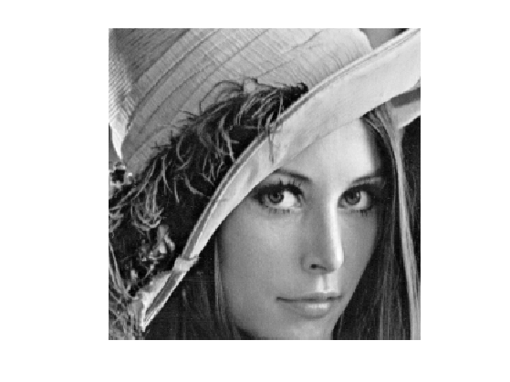
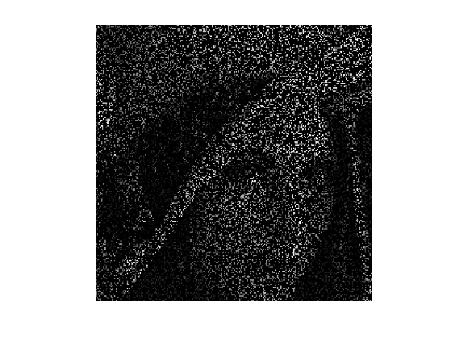
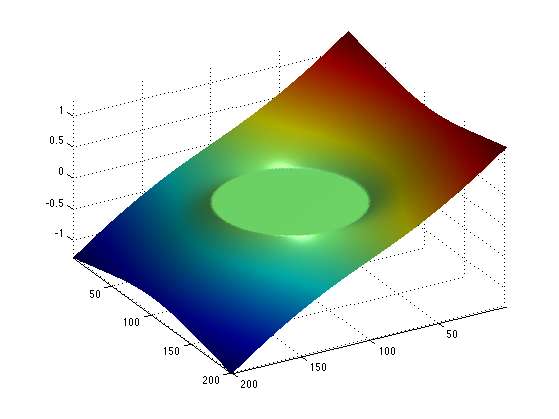
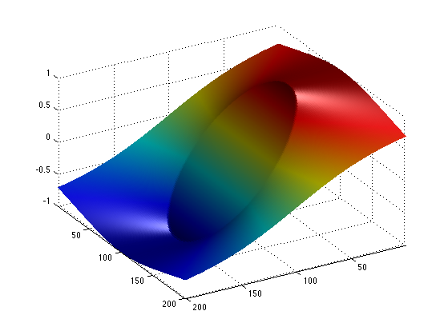
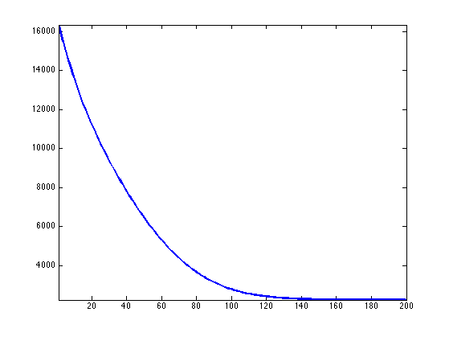
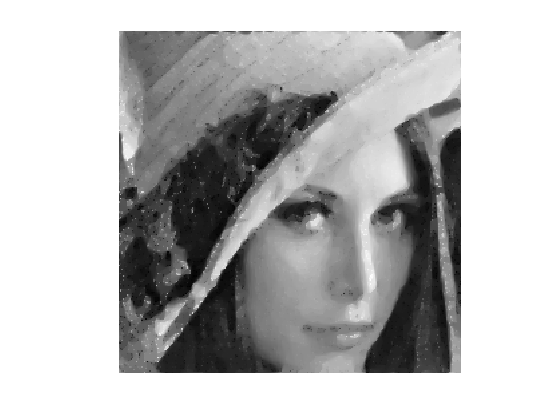
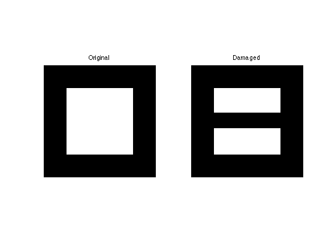
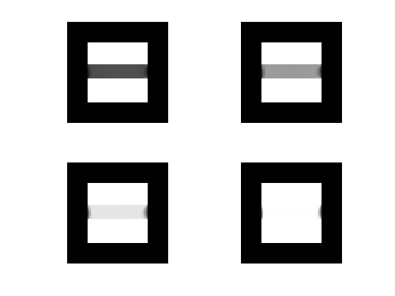

Primal-Dual Proximal Splitting
This tour explores a primal-dual proximal splitting algorithm, with application to imaging problems.
Contents
Installing toolboxes and setting up the path.
You need to download the following files: signal toolbox and general toolbox.
You need to unzip these toolboxes in your working directory, so that you have toolbox_signal and toolbox_general in your directory.
For Scilab user: you must replace the Matlab comment '%' by its Scilab counterpart '//'.
Recommandation: You should create a text file named for instance numericaltour.sce (in Scilab) or numericaltour.m (in Matlab) to write all the Scilab/Matlab command you want to execute. Then, simply run exec('numericaltour.sce'); (in Scilab) or numericaltour; (in Matlab) to run the commands.
Execute this line only if you are using Matlab.
getd = @(p)path(p,path); % scilab users must *not* execute this
Then you can add the toolboxes to the path.
getd('toolbox_signal/'); getd('toolbox_general/');
Convex Optimization with a Primal-Dual Scheme
In this tour we use the primal-dual algorithm detailed in:
Antonin Chambolle and Thomas Pock A First-order primal-dual algorithm for convex problems with application to imaging, Journal of Mathematical Imaging and Vision, Volume 40, Number 1 (2011), 120-145
One should note that there exist many other primal-dual schemes.
We consider general optimization problems of the form \[ \umin{f} F(K(f)) + G(f) \] where \(F\) and \(G\) are convex functions and \(K : f \mapsto K(f)\) is a linear operator.
For the primal-dual algorithm to be applicable, one should be able to compute the proximal mapping of \(F\) and \(G\), defined as: \[ \text{Prox}_{\gamma F}(x) = \uargmin{y} \frac{1}{2}\norm{x-y}^2 + \ga F(y) \] (the same definition applies also for \(G\)).
The algorithm reads: \[ g_{k+1} = \text{Prox}_{\sigma F^*}( g_k + \sigma K(\tilde f_k) \] \[ f_{k+1} = \text{Prox}_{\tau G}( f_k-\tau K^*(g_k) ) \] \[ \tilde f_{k+1} = f_{k+1} + \theta (f_{k+1} - f_k) \]
The dual functional is defined as \[ F^*(y) = \umax{x} \dotp{x}{y}-F(x). \] Note that being able to compute the proximal mapping of \(F\) is equivalent to being able to compute the proximal mapping of \(F^*\), thanks to Moreau's identity: \[ x = \text{Prox}_{\tau F^*}(x) + \tau \text{Prox}_{F/\tau}(x/\tau) \]
It can be shown that in the case \(\theta=1\), if \(\sigma \tau \norm{K}^2<1\), then \(f_k\) converges to a minimizer of the original minimization of \(F(K(f)) + G(f)\).
More general primal-dual schemes have been developped, see for instance
L. Condat, A primal-dual splitting method for convex optimization involving Lipschitzian, proximable and linear composite terms, J. Optimization Theory and Applications, 2013, in press.
Inpainting Problem
We consider a linear imaging operator \(\Phi : f \mapsto \Phi(f)\) that maps high resolution images to low dimensional observations. Here we consider a pixel masking operator, that is diagonal over the spacial domain.
Load an image.
name = 'lena';
n = 256;
f0 = load_image(name);
f0 = rescale(crop(f0,n));
Display it.
clf; imageplot(f0);
We consider here the inpainting problem. This simply corresponds to a masking operator.
Load a random mask \(\La\).
rho = .8; Lambda = rand(n,n)>rho;
Masking operator \( \Phi \).
Phi = @(f)f.*Lambda;
Compute the observations \(y=\Phi f_0\).
y = Phi(f0);
Display it.
clf; imageplot(y);
Total Variation Regularization under Constraints
We want to solve the noiseless inverse problem \(y=\Phi f\) using a total variation regularization: \[ \umin{ y=\Phi f } \norm{\nabla f}_1 \]
This can be recasted as the minimization of \(F(K(f)) + G(f)\) by introducing \[ G(f)=i_H(f), \quad F(u)=\norm{u}_1 \qandq K=\nabla, \] where \(H = \enscond{x}{\Phi(x)=y}\) is an affine space, and \(i_H\) is the indicator function \[ i_H(x) = \choice{ 0 \qifq x \in H, \\ +\infty \qifq x \notin H. } \]
Shorcut for the operators.
K = @(f)grad(f); KS = @(u)-div(u);
Shortcut for the TV norm.
Amplitude = @(u)sqrt(sum(u.^2,3)); F = @(u)sum(sum(Amplitude(u)));
The proximal operator of the vectorial \(\ell^1\) norm reads \[ \text{Prox}_{\lambda F}(u) = \max\pa{0,1-\frac{\la}{\norm{u_k}}} u_k \]
ProxF = @(u,lambda)max(0,1-lambda./repmat(Amplitude(u), [1 1 2])).*u;
Display the thresholding on the vertical component of the vector.
t = -linspace(-2,2, 201); [Y,X] = meshgrid(t,t); U = cat(3,Y,X); V = ProxF(U,1); clf; surf(V(:,:,1)); colormap jet(256); view(150,40); axis('tight'); camlight; shading interp;
For any 1-homogeneous convex functional, the dual function is the indicator of a convex set. For the \(\ell^1\) norm, it is the indicator of the \(\ell^\infty\) ball \[ F^* = i_{\norm{\cdot}_\infty \leq 1} \qwhereq \norm{u}_\infty = \umax{i} \norm{u_i}. \]
The proximal operator of the dual function is hence a projector (and it does not depend on \(\sigma\) ) \[ \text{Prox}_{\sigma F^*}(u) = \text{Proj}_{\norm{\cdot}_\infty \leq 1}(u). \]
A simple way to compute the proximal operator of the dual function \(F^*\), we make use of Moreau's identity: \[ x = \text{Prox}_{\tau F^*}(x) + \tau \text{Prox}_{F/\tau}(x/\tau) \]
ProxFS = @(y,sigma)y-sigma*ProxF(y/sigma,1/sigma);
Display this dual proximal on the vertical component of the vector.
V = ProxFS(U,1); clf; surf(V(:,:,1)); colormap jet(256); view(150,40); axis('tight'); camlight; shading interp;
The proximal operator of \(G = i_H\) is the projector on \(H\). In our case, since \(\Phi\) is a diagonal so that the projection is simple to compute \[ \text{Prox}_{\tau G}(f) = \text{Proj}_{H}(f) = f + \Phi(y - \Phi(f)) \]
ProxG = @(f,tau)f + Phi(y - Phi(f));
Primal-dual Total Variation Regularization Algorithm
Now we can apply the primal dual scheme to the TV regularization problem.
We set parameters for the algorithm. Note that in our case, \(L=\norm{K}^2=8\). One should has \(L \sigma \tau < 1\).
L = 8; sigma = 10; tau = .9/(L*sigma); theta = 1;
Initialization, here f stands for the current iterate \(f_k\), g for \(g_k\) and f1 for \(\tilde f_k\).
f = y; g = K(y)*0; f1 = f;
Example of one iterations.
fold = f; g = ProxFS( g+sigma*K(f1), sigma); f = ProxG( f-tau*KS(g), tau); f1 = f + theta * (f-fold);
Exercice 1: (check the solution) Implement the primal-dual algorithm. Monitor the evolution of the TV energy \(F(K(f_k))\) during the iterations. Note that one always has \( f_k \in H \) so that the iterates satisfies the constraints.
exo1;
Display inpainted image.
clf; imageplot(f);
Exercice 2: (check the solution) Use the primal dual scheme to perform regularization in the presence of noise \[ \umin{\norm{y-\Phi(f)} \leq \epsilon} \norm{\nabla f}_1. \]
exo2;
Inpainting Large Missing Regions
It is possible to consider a more challening problem of inpainting large missing regions.
To emphasis the effect of the TV functional, we use a simple geometric image.
n = 64;
name = 'square';
f0 = load_image(name,n);
We remove the central part of the image.
a = 4; Lambda = ones(n); Lambda(end/2-a:end/2+a,:) = 0; Phi = @(f)f.*Lambda;
Display.
clf; imageplot(f0, 'Original', 1,2,1); imageplot(Phi(f0), 'Damaged', 1,2,2);
Exercice 3: (check the solution) Display the evolution of the inpainting process.
exo3;